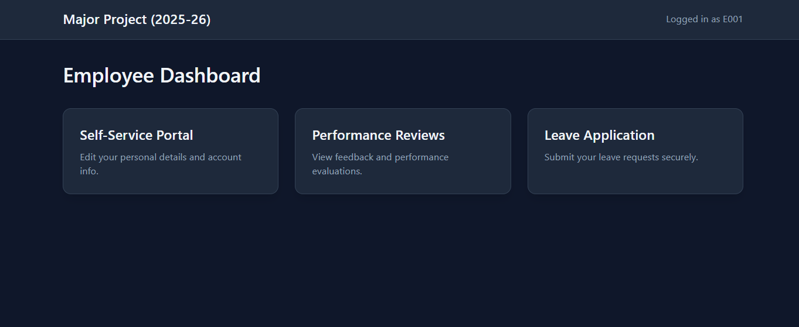
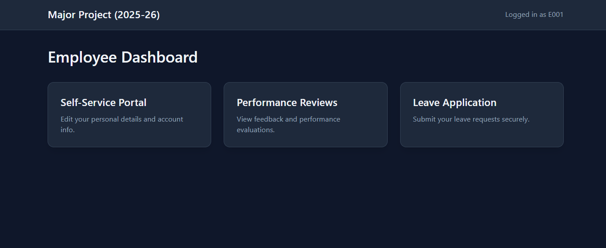
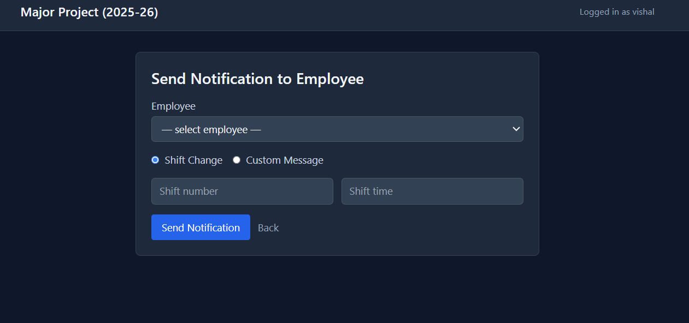
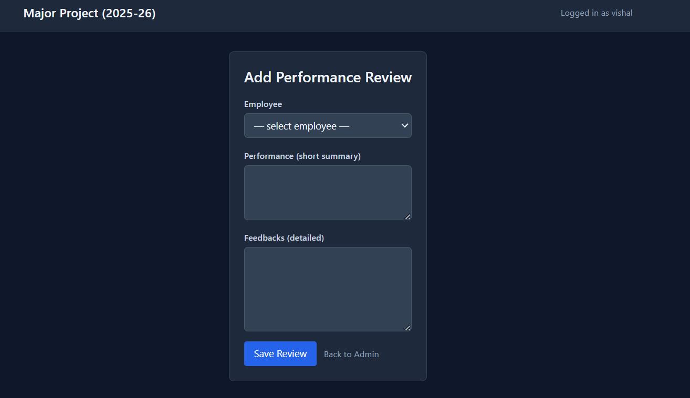
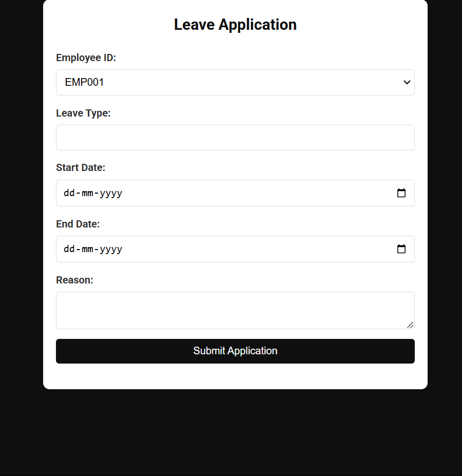

Workforce Efficiency System Using Computer Vision and Django
A comprehensive monitoring solution combining Django, YOLOv8, and DeepSORT to automate attendance, track movement, and generate actionable workforce insights.
Overview
The Workforce Efficiency & Attendance System is a full-stack application built on Django that leverages computer vision for worker detection and tracking. It features facial recognition for automated attendance, DeepSORT for entrance counting, and a robust admin panel. All data is securely stored in PostgreSQL and visualized through interactive charts.
Django Auth & Session Management
Updated 

The system now implements robust Django Session Management to handle authentication and authorization. This ensures secure, individual access control for every employee and administrator, replacing the previous basic Flask login.
AI Worker Detection
Powered by the YOLOv8m model, the system analyzes CCTV footage frame-by-frame to identify individuals, drawing bounding boxes with high-confidence probability scores.
Real-Time Counting
OpenCV dynamically overlays the total worker count on the live feed, enabling instant density analysis.
DeepSORT Tracking
NewUpdate to previous algorithm: We replaced the simple ROI-based trespassing alerts with DeepSORT. This now tracks specific workers through entrances and exits, maintaining a precise count of people entering versus leaving.
Crowd Density Heatmaps
NewUpdate to Overcrowding Detection: Instead of simple limit alerts, the system now generates real-time heatmaps using YOLOv8 and JetColormap. This provides a visual representation of high-traffic zones, allowing for better crowd management and safety planning.
Data Visualization & Insights
The system processes PostgreSQL data using Pandas and generates visual reports with Matplotlib, offering insights into attendance trends, age demographics, and gender distribution.
Shift Management
Admins can update schedules and trigger automated email notifications via Python's SMTP library.
Self-Service Portal

Employees can log in to view their own records, update personal details, and check attendance history.
Performance Reviews
Digital storage for performance evaluations, accessible by both managers and employees.
Leave Applications
Streamlined workflow for applying for leave and receiving approval/rejection updates.
Attendance & Helmet Detection
Logic Updated
A dedicated PyQt5 interface captures real-time video for automated attendance. This system now integrates YOLOv8 Helmet Detection with face_recognition. Attendance is marked only if the worker is successfully identified AND is detected wearing a safety helmet, ensuring strict compliance with safety regulations.
Automated Reporting
Admins can generate comprehensive PDF reports using ReportLab. These reports include embedded graphs and statistics, perfect for weekly or monthly audits. Data can also be exported to Excel for further offline analysis.